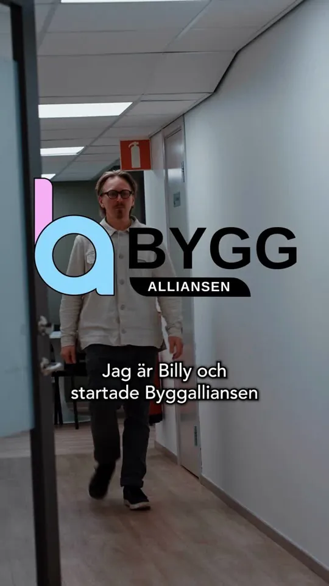
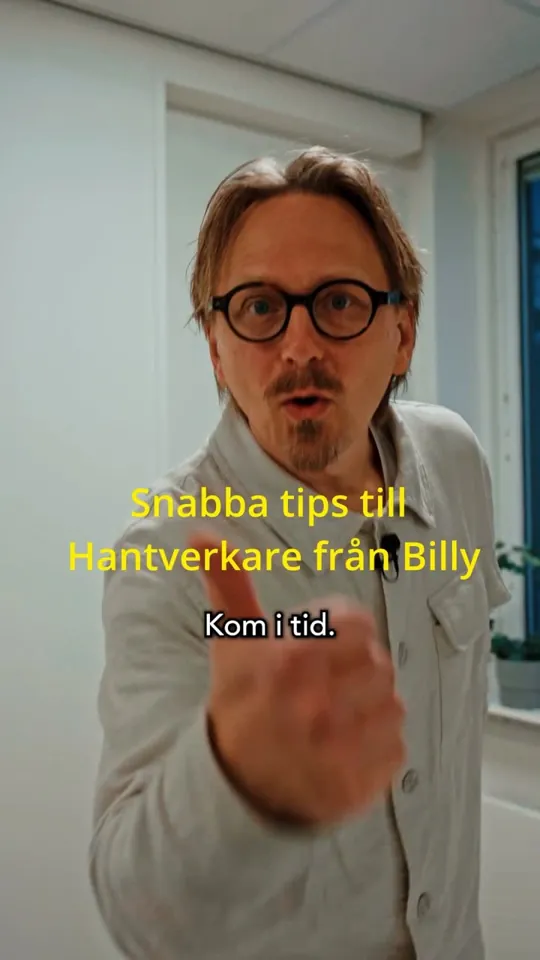
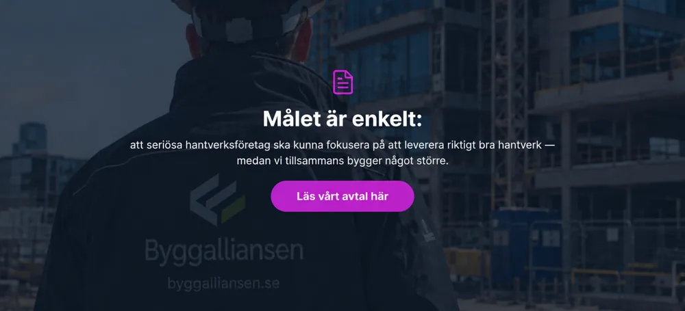
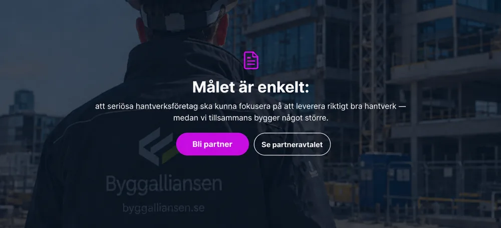

Byggalliansen
Hur får man fler små hantverksföretag att bli partners? Med SEO, content och organiska sociala medier för ett nätverk av hantverkare.
Mitt bidrag
- Intervjuer med hantverkare om vad som är tuffast
- Filmade och intervjuade grundaren för sociala medier
- Sökordsanalys
- Tydligare CTA på sidan för nya partners
- Ny metatitel och metabeskrivning
Vad hantverkarna sa
"Man lägger mycket obetald tid på offerter."
"Det var inte därför man blev snickare, då hade man blivit projektledare eller byggingenjör."
"Att jag kan lita på att samarbetet känns tryggt och att det kommer in bra hantverkare och bra projektledare."
Content med grundaren


Sökordsanalys
- få fler kunder som hantverkare
- hitta bygguppdrag
- få fler bygguppdrag
- bygguppdrag Stockholm
- uppdrag för hantverkare
- hantverkarnätverk
- samarbeta med andra hantverkare
- underentreprenör
Ahrefs saknade sökvolym för sökorden, så de är en rekommendation att följa upp framåt.
Tydligare CTA för hantverkare
Före

Förbättringsförslag

Bli partner: en tydlig väg till att bli partner, även längst ner på sidan.
Se partneravtalet: mer fokus på vad besökaren får ut av att klicka.
Ny metadata
Före
partners.byggalliansen.se › bli-partner
tillsammans bygger vi
Ett starkt nätverk. Tydliga avtal. Riktigt bra projekt. Bli partner idag →. Partner hantverkare.
Förbättringsförslag
partners.byggalliansen.se › bli-partner
Byggalliansen – Bli partner som hantverkare
Få tillgång till riktigt bra projekt, tydliga avtal och projektledning. Läs mer om Byggalliansen och ansök för att bli partner.